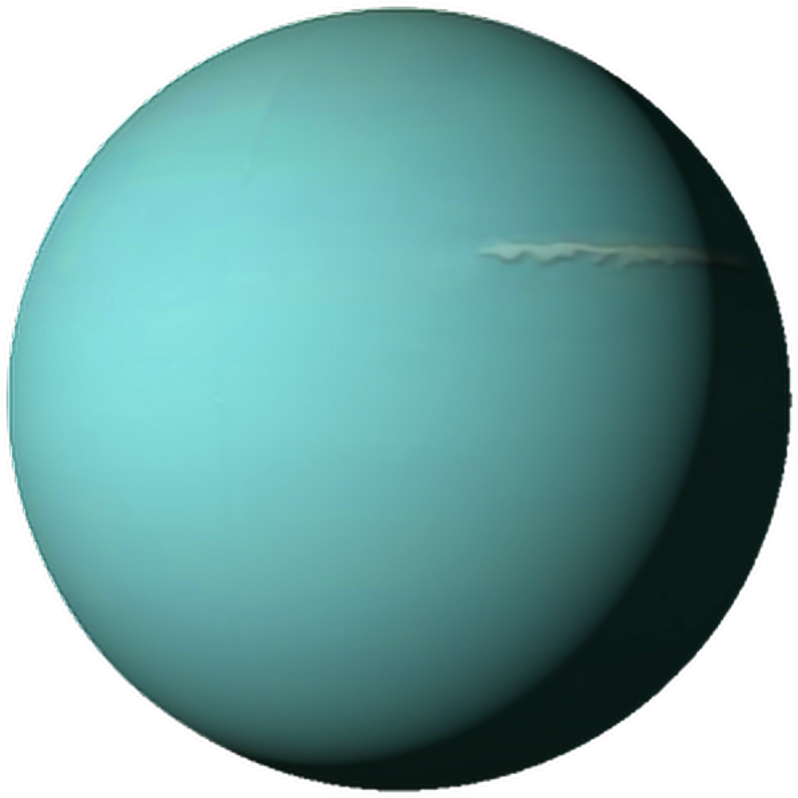

Наблюдение
Люди видели эту планету, но принимали ее за звезду. Именно поэтому планета Уран остается до сих пор огромной загадкой для землян. Огромной Уран называют еще и оттого, что это третья по величине планета системы, диаметр ее по экватору в четыре раза превышает земной, а по массе Уран в 14 раз тяжелее. С Земли Уран видится голубым, так как в его атмосфере большое количество метана.
- Масса – 8,69*1025 кг
- Диаметр – 51118 км
- Наклон оси – 98°
- Температура верхних слоев около – -220 °C
- Ускорение свободного падения около – 9 м/с2
- Период обращения – 84,5 года
- Спутники – 27 шт
История открытия
Первое упоминание планеты — запись английского ученого Джона Флемстида. В течение 1690 года он несколько раз наблюдал это небесное тело, но зафиксировал его только как звезду 34 созвездия Тельца. Уже в 18-ом веке французский астроном ле Моньер вел наблюдения за планетой почти 20 лет, по — прежнему считая ее звездой. Уран — первая планета, обнаруженная при помощи телескопа. Модель этого телескопа находится в музее города Бат в Великобритании. Уильям Гершель вообще вначале счел Уран кометой. Изучая открытое небесное тело с разными линзами, Гершель пришел к выводу, что это не звезда, так как при приближении ее размер менялся. Но он не обнаружил ни хвоста, ни головы, что свойственно кометам.
Спутники Урана
Спутников у планеты много. Хотя некоторая их часть была когда — то захвачена гравитацией Урана и распалась. Самый большой спутник Титания, чуть меньше Оберон. Оба были открыты Гершелем. За ними следуют Умбриэль, Ариэль и Миранда. Из них только Миранда целиком состоит изо льда, остальные — смесь льда и горных пород. Часть спутников движется внутри колец планеты, поэтому называется внутренними. Всем спутникам Урана достались имена в честь героев произведений Уильяма Шекспира. Это тоже дань первооткрывателю из Англии.
Интересный факт: Планета лежит на боку, но почему? Существует предположение, что в далёкие времена зарождения Солнечной системы Уран столкнулся с протопланетой, положившей его на бок, что изменило направление магнитной оси. Оно же остудило и тепловой поток планеты.
Уран в культуре
Уже через 3 года после открытия Уран стал местом действия сатирического памфлета. С тех пор в сюжетную линию своих научно-фантастических произведений его включали Стенли Вейнбаум, Рэмси Кэмпбелл, Ларри Нивен, Сергей Павлов, Георгий Гуревич и другие. Уран был выбран в качестве места действия фильма «Путешествие к седьмой планете», а также отдельных эпизодов сериалов «Космический патруль» и «Генеральный план далеков» (эпизод телесериала «Доктор Кто»). Также планета упоминается в нескольких комиксах, аниме и компьютерных играх. В астрологии Уран считается управителем знака Водолея.